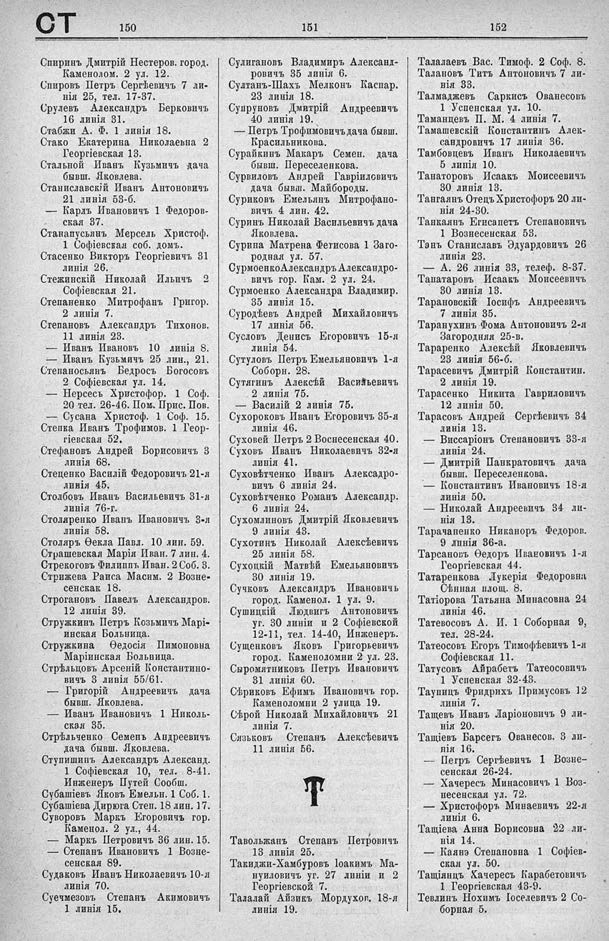

Лист источника 556
Скан

Распознанный текст
СТ 150 151 152
Спиринъ Дмитрій Нестеров. город.
Каменолом. 2 ул. 12.
Спировъ Петръ Сергѣевичъ 7 ли-
нія 25, тел. 17-37.
Срулевъ Александръ Берковичъ
16 линія 31.
Стабжи А. Ф. 1 линія 18.
Стако Екатерина Николаевна 2
Георгіевская 13.
Стальной Иванъ Кузьмичъ дача
бывш. Яковлева.
Станиславскій Иванъ Антоновичъ
21 линія 53-б.
— Карлъ Ивановичъ 1 Ѳедоров-
ская 37.
Станапусьянъ Мерсель Христоф.
1 Софіевская соб. домъ.
Стасенко Викторъ Георгіевичъ 31
линія 26.
Стежинскій Николай Ильичъ 2
Софіевская 21.
Степаненко Митрофанъ Григор.
2 линія 7.
Степановъ Александръ Тихонов.
11 линія 23.
— Иванъ Ивановъ 10 линія 8.
— Иванъ Кузьмичъ 25 лин., 21.
Степаносьянъ Бедросъ Богосовъ
2 Софіевская ул. 14.
— Нерсесъ Христофор. 1 Соф.
20 тел. 26-46. Пом. Прис. Пов.
— Сусана Христоф. 1 Соф. 15.
Степка Иванъ Трофимов. 1 Геор-
гіевская 52.
Стефановъ Андрей Борисовичъ 3
линія 68.
Стеценко Василій Федоровичъ 21-я
линія 45.
Столбовъ Иванъ Васильевичъ 31-я
линія 76-г.
Столяренко Иванъ Ивановичъ 3-я
линія 58.
Столяръ Ѳекла Павл. 10 лин. 59.
Страшевская Марія Иван. 7 лин. 4.
Стрекоговъ Филиппъ Иван. 2 Соб. 3.
Стрижева Раиса Масим. 2 Возне-
сенская 18.
Строгановъ Павелъ Александров.
12 линія 39.
Стружкинъ Петръ Козьмичъ Марі-
инская Больница.
Стружкина Ѳедосія Пимоновна
Маріинская Больница.
Стрѣльцовъ Арсеній Константино-
вичъ 3 линія 55/61.
— Григорій Андреевичъ дача
бывш. Яковлева.
— Иванъ Ивановичъ 1 Николь-
ская 35.
Стрѣльченко Семенъ Андреевичъ
дача бывш. Яковлева.
Ступишинъ Александръ Александ.
1 Софіевская 10, тел. 8-41.
Инженеръ Путей Сообщ.
Субашіевъ Яковъ Емельн. 1 Соб. 1.
Субашіева Дирюга Степ. 18 лин. 17.
Суворовъ Маркъ Егоровичъ гор.
Каменол. 2 ул., 44.
— Маркъ Петровичъ 36 лин. 15.
— Степанъ Ивановичъ 1 Возне-
сенская 89.
Судаковъ Иванъ Николаевичъ 10-я
линія 70.
Суечмезовъ Степанъ Акимовичъ
1 линія 15.
Сулигановъ Владимиръ Александ-
ровичъ 35 линія 6.
Султанъ-Шахъ Мелконъ Каспар.
23 линія 18.
Супруновъ Дмитрій Андреевичъ
40 линія 19.
— Петръ Трофимовичъ дача бывш.
Красильникова.
Сурайкинъ Макаръ Семен. дача
бывш. Переселенкова.
Сурвиловъ Андрей Гавріиловичъ
дача бывш. Майбороды.
Суриковъ Емельянъ Митрофано-
вичъ 4 лин. 42.
Суринъ Николай Васильевичъ дача
Яковлева.
Сурина Матрена Фетисова 1 Заго-
родная ул. 57.
Сурмоено Александръ Александро-
вичъ гор. Кам. 2 ул. 24.
Сурмоено Александра Владимир.
35 линія 15.
Суродѣевъ Андрей Михайловичъ
17 линія 56.
Сусловъ Денись Егоровичъ 15-я
линія 54.
Сутуловъ Петръ Емельяновичъ 1-я
Соборн. 28.
Сутягинъ Алексѣй Васильевичъ
2 линія 75.
— Василій 2 линія 75.
Сухороковъ Иванъ Егоровичъ 35-я
линія 46.
Суховей Петръ 2 Воснесенская 40.
Суховъ Иванъ Николаевичъ 32-я
линія 41.
Суховѣтченко Иванъ Александро-
вичъ 6 линія 24.
Суховѣтченко Романъ Александр.
6 линія 24.
Сухомлиновъ Дмитрій Яковлевичъ
9 линія 43.
Сухотинъ Николай Алексѣевичъ
25 линія 58.
Сухоцкій Матвѣй Емельяновичъ
30 линія 19.
Сучковъ Александръ Ивановичъ
город. Каменол. 1 ул. 9.
Сушицкій Людвигъ Антоновичъ
уг. 30 линіи и 2 Софіевской
12-11, тел. 14-40, Инженеръ.
Сущенковъ Яковъ Григорьевичъ
город. Каменоломни 2 ул. 23.
Сыромятниковъ Петръ Ивановичъ
31 линія 60.
Сѣриковъ Ефимъ Ивановичъ гор.
Каменоломни 2 улица 19.
Сѣрой Николай Михайловичъ 21
линія 7.
Сязьковъ Степанъ Алексѣевичъ
11 линія 56.
T
Тавольжанъ Степанъ Петровичъ
13 линія 25.
Такиджи-Хамбуровъ Іоакимъ Ма-
нуиловичъ уг. 27 линіи и 2
Георгіевской 7.
Талалай Айзикъ Мордухов. 18-я
линія 19.
Талалаевъ Вас. Тимоф. 2 Соф. 8.
Талановъ Титъ Антоновичъ 7 ли-
нія 33.
Талмаджевъ Саркисъ Ованесовъ
1 Успенская ул. 10.
Таманцевъ П. М. 4 линія 7.
Тамашевскій Константинъ Алек-
сандровичъ 17 линія 36.
Тамбовцевъ Иванъ Николаевичъ
5 линія 10.
Танаторовъ Исаакъ Моисеевичъ
30 линія 13.
Тангаянъ Отецъ Христофоръ 20 ли-
нія 24-30.
Танкаянъ Егисапетъ Степановичъ
1 Вознесенская 53.
Тэнъ Станиславъ Эдуардовичъ 26
линія 23.
— А. 26 линія 33, телеф. 8-37.
Тапатаровъ Исаакъ Моисеевичъ
30 линія 13.
Тарановскій Іосифъ Андреевичъ
7 линія 35.
Таранухинъ Фома Антоновичъ 2-я
Загородная 25-в.
Тараренко Алексѣй Яковлевичъ
23 линія 56-б.
Тарасевичъ Дмитрій Константин.
2 линія 19.
Тарасенко Никита Гавриловичъ
12 линія 50.
Тарасовъ Андрей Сергѣевичъ 34
линія 13.
— Виссаріонъ Степановичъ 33-я
линія 24.
— Дмитрій Панкратовичъ дача
бывш. Переселенкова.
— Константинъ Ивановичъ 18-я
линія 50.
— Николай Андреевичъ 34 ли-
нія 13.
Тарачаненко Никаноръ Федоров.
9 линія 36-а.
Тарсановъ Ѳедоръ Ивановичъ 1-я
Георгіевская 44.
Татаренкова Лукерія Федоровна
Сѣнная площ. 8.
Татіорова Татьяна Минасовна 24
линія 46.
Татевосовъ А. И. 1 Соборная 9,
тел. 28-24.
Татеосовъ Егоръ Тимофѣевичъ 1-я
Софіевская 11.
Татусовъ Айрабетъ Татеосовичъ
1 Успенская 32-43.
Таупицъ Фридрихъ Примусовъ 12
линія 7.
Тащевъ Иванъ Ларіоновичъ 9 ли-
нія 20.
Тащіевъ Барсегъ Ованесов. 3 ли-
нія 16.
— Петръ Сергѣевичъ 1 Возне-
сенская 26-24.
— Хачересъ Минасовичъ 1 Воз-
несенская ул. 72.
— Христофоръ Минаевичъ 22-я
линія 6.
Тащіева Анна Борисовна 22 ли-
нія 14.
— Каянэ Степановна 1 Софіев-
ская ул. 50.
Тащіянецъ Хачересъ Карабетовичъ
1 Георгіевская 43-9.
Тевлинъ Нохимъ Іоселевичъ 2 Со-
борная 5.